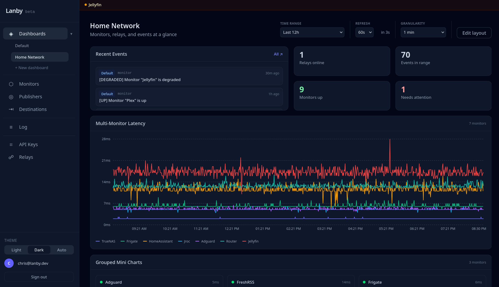
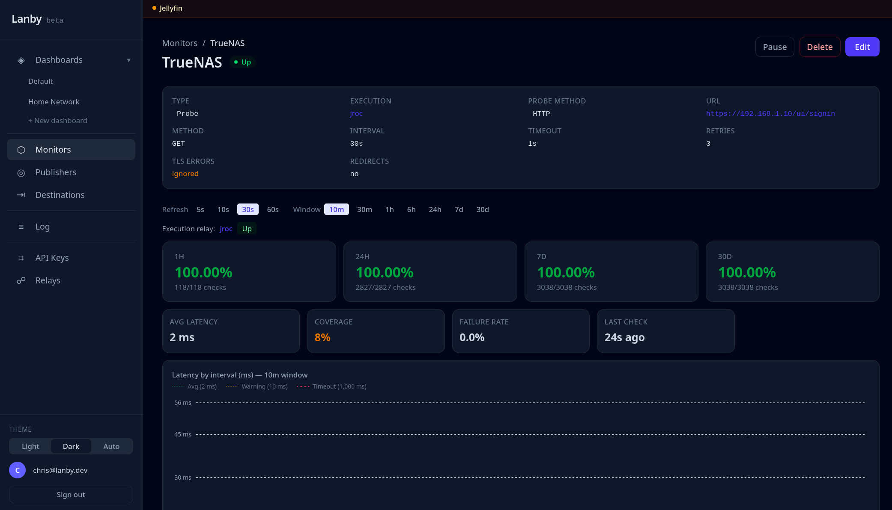
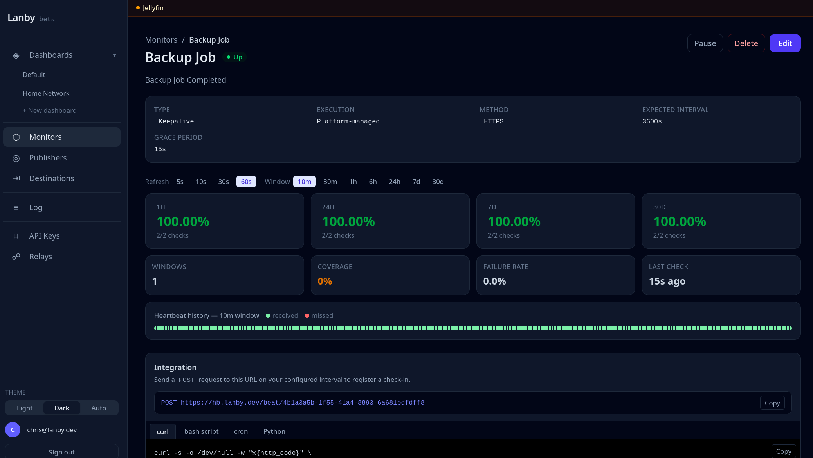
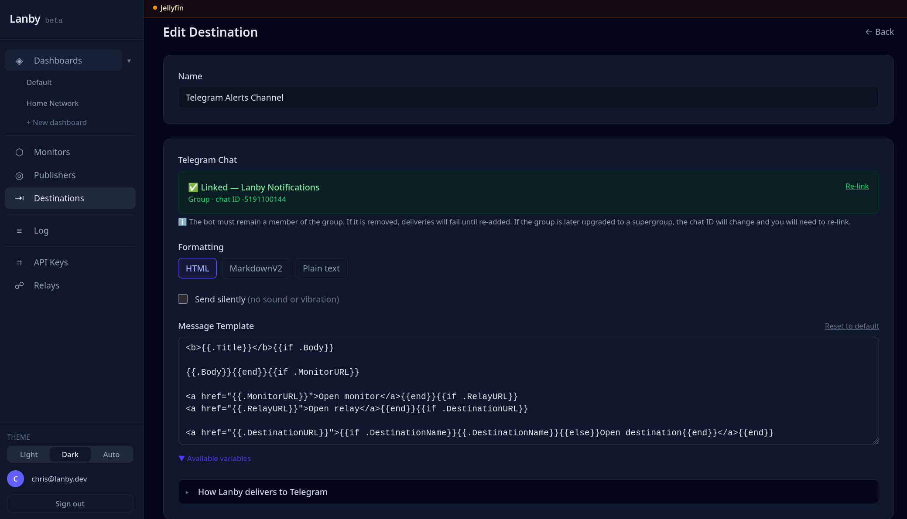

I run a lot of self-hosted services and kept finding out things were broken long after the fact. Tools like Uptime Kuma are great, but now you're hosting your monitoring too — and if that goes down, you're back to square one. I wanted something that watched my stack without becoming part of it. Uptime probes, heartbeat alerts, and a relay that reaches everything behind your firewall — no inbound ports needed.
Invite-only for now. I'm using it for my own stack while I build it out — reach out if you want early access.
Active probes check your services from outside, the relay checks from inside your network, and alerts go to wherever you're already paying attention.
Active probes and passive heartbeats covering every layer of your stack — HTTP endpoints, open ports, DNS records, gRPC services, and long-running processes that should check in on a schedule.
Get notified the moment a monitor goes down or recovers. Route alerts to webhooks, Telegram chats, or any destination you configure — with per-monitor topics so the right alert reaches the right place.
Send events from any script, cron job, or application with a single API call — backup completions, deploy hooks, scheduled task results. Routed to the same destinations as your monitor alerts.
The fleet dashboard shows every monitor's current status, recent check history, and response-time trends — all updating live. Spot a degraded service the moment it starts struggling, not after users start complaining.

Drill into any monitor for a full response-time chart, uptime percentage, and a log of recent check results. Every data point is timestamped so you can correlate incidents with deploys or other changes.

Heartbeat monitors expect a check-in on a schedule — from a cron job, backup script, or any process. Miss a window and Lanby fires an alert. This is how you find out a backup silently stopped running, not three weeks after the fact.

Configure destinations once — Telegram, webhooks, or whatever you use — then route monitors to them by topic. Critical alerts can go to one place, lower-priority ones somewhere else. No new inbox to check.

Not an exhaustive list — just the stuff that actually comes up when you're running a bunch of services.
Send a heartbeat after each successful run. Miss a window and Lanby fires an alert. This is how I know my backups actually ran.
HTTP probes checking status codes and response content from outside your network. TLS certificate expiry is checked on every probe — get alerted before a cert expires, not after users start seeing browser warnings.
TCP and ping probes for databases, game servers, local DNS — anything that doesn't speak HTTP but still needs to be up.
One API call from a backup script or deploy hook — delivered to wherever you're already looking. Same routing as monitor alerts.
Lanby's platform probes run from the internet. That works for public services, but breaks down for anything on a private network — a NAS, a database, a service behind a VPN. The relay is a Docker container you run inside your own network. It polls Lanby for assigned monitors, runs the probes locally, and POSTs the results back. Your firewall doesn't change.
The relay polls for due monitors, runs probes inside your network, then POSTs {success, latency_ms, error} back over HTTPS. No inbound traffic, ever.
Security model
--privileged flag, no host networking, no extra kernel capabilities. Runs as a normal unprivileged process.
What it needs to run
api.lanby.dev. No other outbound rules required.
curl or ping from that machine.
Roughly in order. Some of this is nearly done; some is still figuring itself out.
Public and private status pages driven by your monitors. Share a live view with users without handing them your dashboard.
ntfy and Gotify are the obvious next ones for self-hosters. Slack, Discord, and email after that. If you use something I haven't listed, let me know.
Native integrations with things like Home Assistant, Vaultwarden, Authentik, and Portainer — so you're not writing webhook glue for every app you run.
Expose a specific internal service to a trusted user without opening firewall ports. Still figuring out the right shape for this one.
Push notifications and a quick status view on your phone. Makes sense — just not the most urgent thing right now.